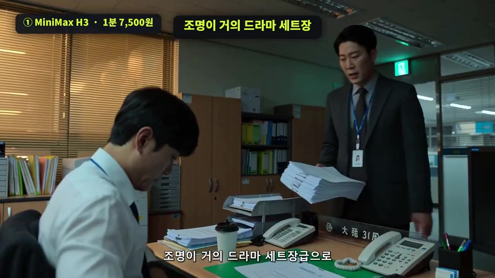
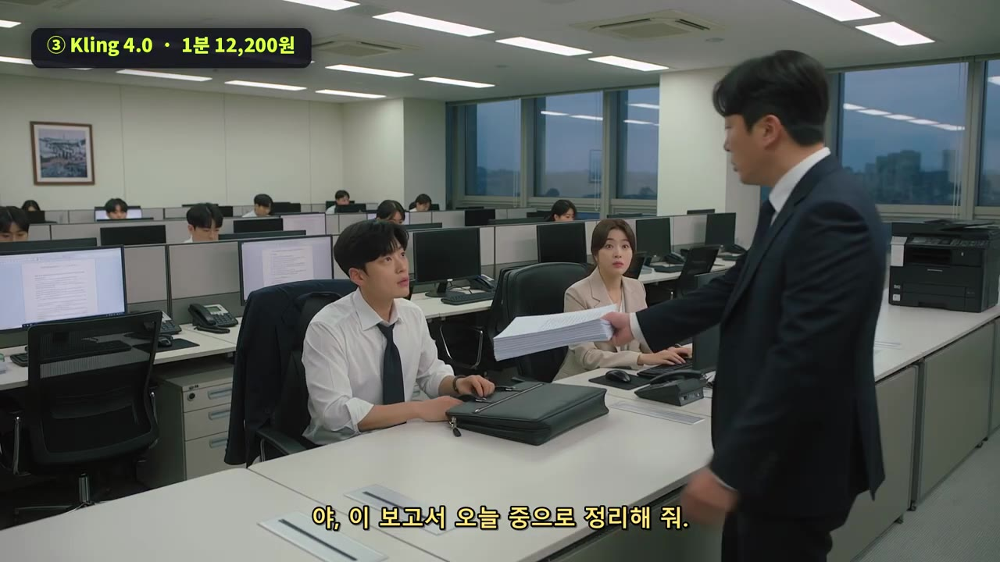
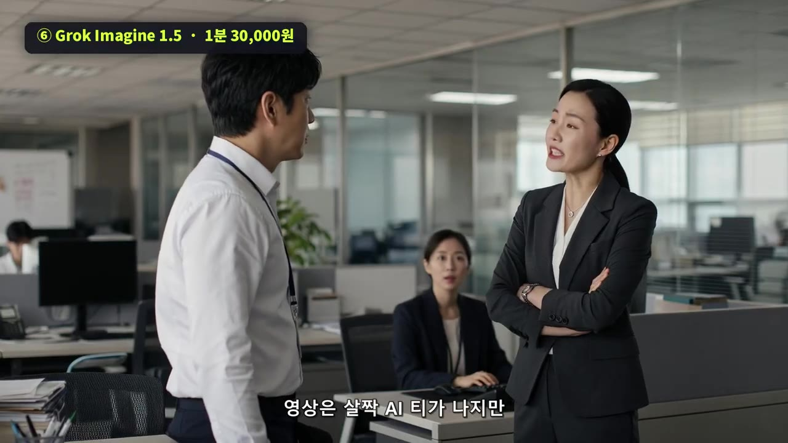
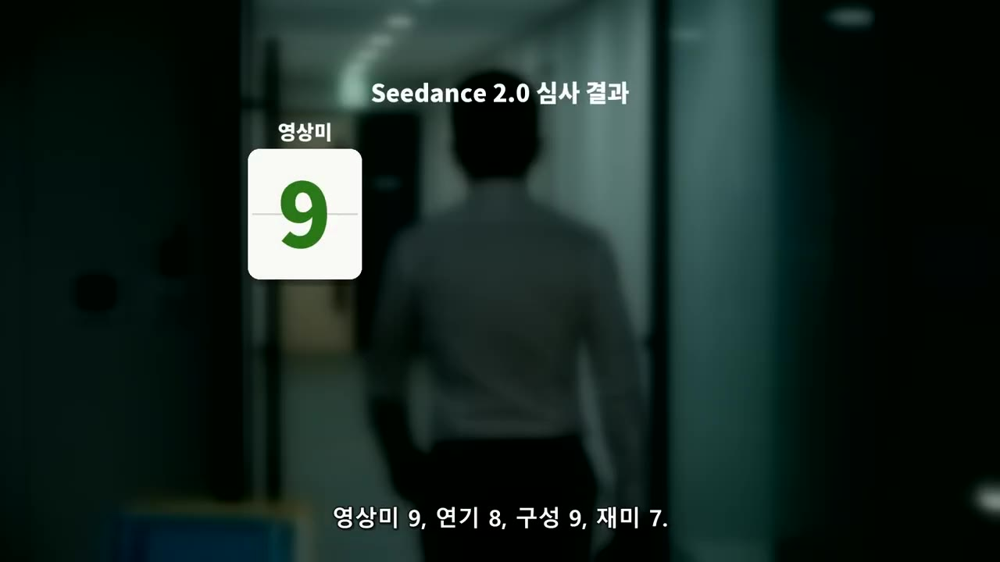
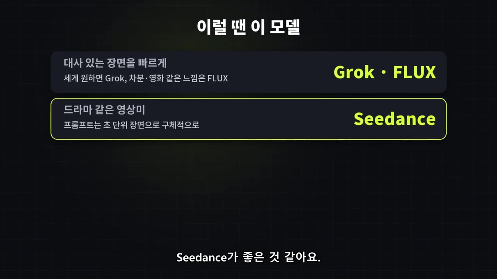

부장님한테 대드는 연기, AI가 얼마나 자연스럽게 할까?｜힉스필드 9개 모델 비교
▶ 원본 영상 보기한눈에 보기
- 같은 프롬프트("퇴근하려는데 상사가 일을 더 준다, 직원이 처음으로 속마음을 말한다")로 힉스필드(Higgsfield)의 AI 영상 모델 9개를 비교한 실험입니다.
- 1분 기준 가격은 약 7,500원에서 60,000원까지 8배 차이가 났지만, 점수는 가격과 비례하지 않았습니다.
- 1위는 그록(Grok)과 시덴스(Seedance) 2.0으로 40점 만점에 33점 동점이었고, 플럭스(Flux) 32점, 시덴스 2.5 32점이 뒤를 이었습니다.
- 가장 싼 미니맥스는 29점으로 가성비가 좋았고, 비싼 시덴스는 프롬프트를 초 단위로 나눠야 영상이 나왔습니다.
- ⚠️ 이 영상은 힉스필드의 유료 광고를 포함합니다. 비용은 촬영 당시 테스트 기준입니다.
이런 분께 도움이 됩니다
- AI 영상 모델 중 무엇을 써야 할지, 가격 대비 결과가 어떤지 알고 싶은 분
- 대사가 있는 짧은 드라마·숏폼을 AI로 만들려는 분
핵심 내용
실험 조건
- 프롬프트는 하나만 썼습니다. 상황만 주고 대사와 연출은 AI에게 맡겼습니다.
- 길이와 화질은 모델이 지원하는 대로 맞췄고, 다시 뽑기 없이 첫 결과만 평가했습니다.
- 점수는 영상미·연기·구성(프롬프트를 따른 정도 포함)·재미 각 10점, 총 40점입니다. 평가는 전적으로 진행자의 주관입니다.
- 가격은 모델마다 길이가 달라 1분짜리 영상 기준으로 환산해 소개했습니다.

모델별 결과
| 모델 | 1분 기준 가격 | 길이 | 점수 | 한줄 평 |
|---|---|---|---|---|
| 미니맥스 | 약 7,500원 | 15초 | 29 | 조명이 드라마 세트급, 대사는 정석적, 동료 반응 없음 |
| 원 2.5 패스트 | 1회 1,600원 | 10초 | 12 | 카메라 고정, 글자 깨짐, 쓸 수 없는 수준 |
| 클링 4.0 | 약 12,000원 (할인가) | 30초 | 30 | 속마음을 혼잣말로 살린 유일한 모델, 중간이 늘어짐 |
| 재미나이 옴니패스트 | 약 17,000원 | 10초 | 26 | 등장·참는 표정·한마디·퇴장을 10초에 다 넣음, 기억에 남는 장면은 적음 |
| 원 3.0 프리미엄 | 약 22,500원 (할인가) | 30초 | 24 | 2.5보다 사람 같지만 조명이 애매하고 멘트가 아쉬움 |
| 그록 | 약 30,000원 | 15초 | 33 | 상사와 대사를 주고받으며 싸우는 유일한 장면, 동료 표정도 살아 있음 |
| 플럭스 | 약 30,000원 | 미확인 | 32 | 화내지 않고 웃으며 선을 긋는 사이다 대사, 색감이 영화 같음 |
| 시덴스 2.0 | 약 45,000원 | 미확인 | 33 | 눈빛·조명·표정 연기가 드라마 같고 뒷모습까지 의도대로 나옴 |
| 시덴스 2.5 | 약 60,000원 | 20초 시험 (2만 원) | 32 | 화질·카메라·인물은 최고급, 멘트가 면접 답변처럼 밋밋함 |
- 점수 계산: 미니맥스 9·7·7·6, 원 2.5 4·2·2·4, 클링 8·8·7·7, 재미나이 7·7·7·5, 원 3.0 6·6·7·5, 그록 7·8·9·9, 플럭스 8·7·9·8, 시덴스 2.0 9·8·9·7, 시덴스 2.5 9·8·9·6입니다. 영상미·연기·구성·재미 순입니다.
- 모델 이름은 자막 음성 인식 표기이고 일부 불분명합니다. 미니맥스는 "H3"로 들렸고(자막상 불분명), "원"은 Wan, "시덴스"는 Seedance로 추정됩니다. 재미나이 옴니패스트의 정확한 모델명도 확인이 필요합니다.
- 플럭스와 시덴스 2.0의 영상 길이는 자막에 나오지 않았습니다.

💡 가격이 오른다고 점수가 오르지는 않았다 — 원 2.5(12점)·원 3.0(24점)은 낮았고, 최고점은 3만 원대 그록과 4만 원대 시덴스 2.0이었다. (4:49)
그록: 대사가 오가는 싸움 장면
- 15초 안에 상사와 직원이 말을 주고받으며 다투는 장면이 완성됐고, 뒤쪽 동료들의 표정까지 살아 있었습니다.
- 영상은 약간 AI 티가 나지만 이야기 구성은 가장 좋다는 평가입니다. (5:15)
- 이 장면에서 1위가 바뀌었습니다.

시덴스: 프롬프트를 바꿔야 했던 이유
- 같은 프롬프트를 넣자 "보호되는 콘텐츠가 감지됐다"는 메시지와 함께 생성이 되지 않았습니다. 유명인이나 캐릭터를 넣은 것이 아닌데도 그랬습니다. 실패한 생성은 크레딧이 바로 환불됐습니다. (6:38)
- 그래서 상황은 그대로 두고 장면을 초 단위로 나눠 "언제 누가 말하는지"를 정해 준 프롬프트로 바꿨더니 결과가 나왔습니다. (7:06)
- ⚠️ 이 모델만 프롬프트가 달라서 다른 모델과 완전히 같은 조건의 비교는 아닙니다.
- 시덴스 2.0 가격은 자막에 "45만 5,000원"과 "4만 5,000원"이 섞여 있습니다. 1분 기준 약 4만 5천 원이 맞아 보이며(자막상 불분명), 2.5가 6만 원, 2.0이 미니맥스의 약 6배, 2.5가 8배라는 설명과 맞물립니다.

용도별 추천 (진행자 의견)
- 대사 있는 장면을 빠르게: 그록, 플럭스
- 드라마·영화 같은 영상미: 시덴스 (프롬프트를 초 단위 장면으로 구체적으로 쓸 것)
- 가성비, 많이 뽑아야 할 때: 미니맥스
- 감정을 천천히 쌓는 긴 장면: 클링 (8:43, 9:03)
- 힉스필드는 모델을 바꿔 가며 싸게 먼저 테스트한 뒤 원하는 모델을 고를 수 있고, 실패한 생성은 크레딧이 환불돼 부담이 적다고 합니다. (광고 포함)

따라 해보기
준비물
- 힉스필드(Higgsfield) 계정과 크레딧 (영상 속 비용은 플랜·설정·시점에 따라 달라짐)
- 영상 설명란의 Notion 링크에 있는 프롬프트 원문 (이 노트에는 원문이 없음)
단계별 방법
🔁 모델 비교 실험 순서
- 프롬프트 준비
- 모델 선택
- 길이·화질 설정
- 생성
- 점수 매기기
- 막힌 모델 대응
- 1프롬프트 준비
상황만 쓰고 대사·연출은 AI에게 맡깁니다. 예: "퇴근하려는데 상사가 일을 더 준다. 직원이 처음으로 속마음을 말한다."
- 2모델 선택
힉스필드 안에서 비교할 모델(미니맥스, 클링, 그록, 시덴스 등)을 고릅니다.
- 3길이·화질 설정
모델이 지원하는 값에 맞춥니다. 한 번에 뽑을 수 있는 길이가 모델마다 다릅니다(예: 미니맥스 15초, 재미나이 10초).
- 4생성
같은 프롬프트로 모델만 바꿔 생성하고, 다시 뽑지 않고 첫 결과만 비교합니다.
- 5점수 매기기
영상미·연기·구성·재미를 각 10점으로 채점합니다.
- 6막힌 모델 대응
"보호되는 콘텐츠" 오류가 나면 장면을 초 단위로 나누고 누가 언제 말하는지 지정합니다.
따라 할 수 있는지 점검
- ✅ 바로 따라 할 수 있음: 프롬프트 한 줄 입력, 모델 바꿔 생성, 4항목 채점 방식
- ⚠️ 2단계 「모델 선택」: 힉스필드 메뉴 위치와 모델명이 화면 설명 없이 지나갑니다 → 영상 0:34 부근 화면과 힉스필드 사이트에서 확인
- ⚠️ 4단계 「생성」: 요금제·크레딧 구매가 필요한지, 무료로 어디까지 되는지 영상에 없습니다 → 힉스필드 요금 안내 확인
- ⚠️ 6단계 「막힌 모델 대응」: 초 단위로 나눈 프롬프트 원문이 영상에 없습니다 → 설명란 Notion 링크 참고
- ❓ 시덴스 2.0 가격(45만 5천 원 vs 4만 5천 원)이 자막에서 엇갈립니다.
확인 방법
- 모델별로 대사, 입 모양, 표정 변화, 상대 배우 반응을 비교해 영상미·연기·구성·재미 점수표를 채울 수 있으면 됩니다.
막히면
- 생성이 거부되면 프롬프트를 초 단위 장면으로 바꾸고, 실패한 생성은 크레딧이 환불되는지 확인하세요(영상 기준).
기억할 숫자·인용
- 가격 차이 8배: 약 7,500원(미니맥스) vs 6만 원(시덴스 2.5), 1분 기준
- 1위 33점: 그록, 시덴스 2.0 / 최하위 12점: 원 2.5 패스트
- "비싸다고 무조건 좋은 건 아니에요."
생각해볼 점
- 점수는 진행자의 주관이고 모델당 한 번만 뽑은 결과라 운에 좌우될 수 있습니다. (내 의견)
- 시덴스만 프롬프트가 달랐고, 영상 길이도 제각각이라 공정한 비교는 아닙니다.
- 광고가 포함된 영상이므로 가격과 크레딧은 직접 확인하는 것이 좋습니다.
바로 해볼 일
- 영상 설명란의 프롬프트로 저렴한 모델 하나(미니맥스 등)를 먼저 시험해 보기
- 같은 프롬프트로 모델 2~3개를 비교해 내 용도에 맞는 것 고르기
- 생성이 막히면 장면을 초 단위로 나눈 프롬프트로 다시 시도하기